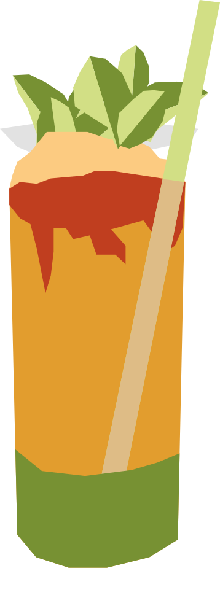

¿Springbok o Antidorcas marsupialis?
Creado en los años 1920 en el bar del histórico Queen's Park Hotel de Puerto España. Es uno de los cócteles con menta más antiguos del Caribe y su técnica de batido influenció a toda una familia de bebidas "swizzle" en la región.
RECETA
- 60 ml ron dorado
- 30 ml jugo de lima
- 15 ml jarabe simple
- 8–10 hojas de menta
- 2–3 golpes de Angostura bitters
- Hielo triturado
- Ramita de menta
- Para preparar el jarabe simple, mezcla partes iguales de azúcar y agua caliente hasta que el azúcar se disuelva. Deja enfriar antes de usar.
- Coloca la menta y el jarabe simple en un vaso y machaca suavemente la menta.
- Agrega el ron y el jugo de lima.
- Llena el vaso con hielo triturado y mezcla con una cuchara de bar hasta que se enfríe bien.
- Completa con más hielo y agrega los bitters por encima.
- Decora con una ramita de menta y unas gotas de Angostura bitters.
Vaso: Vaso alto (Collins)